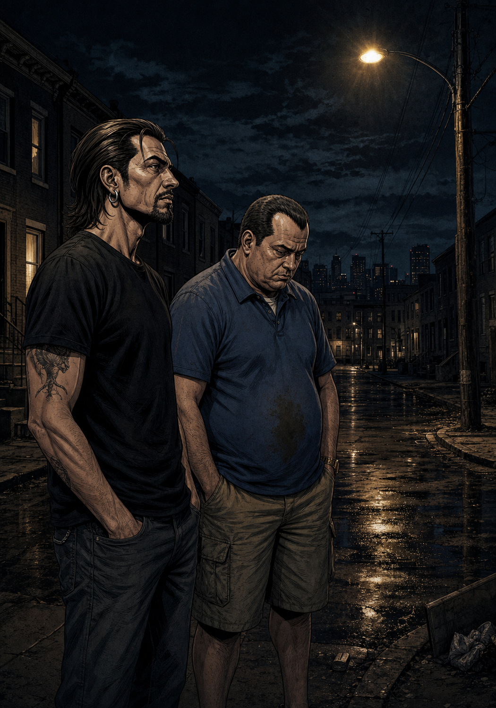
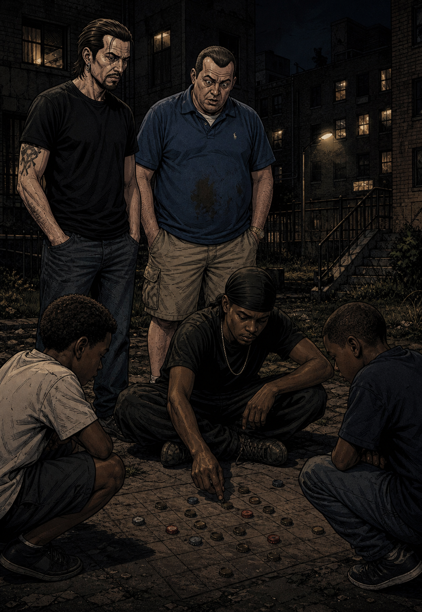
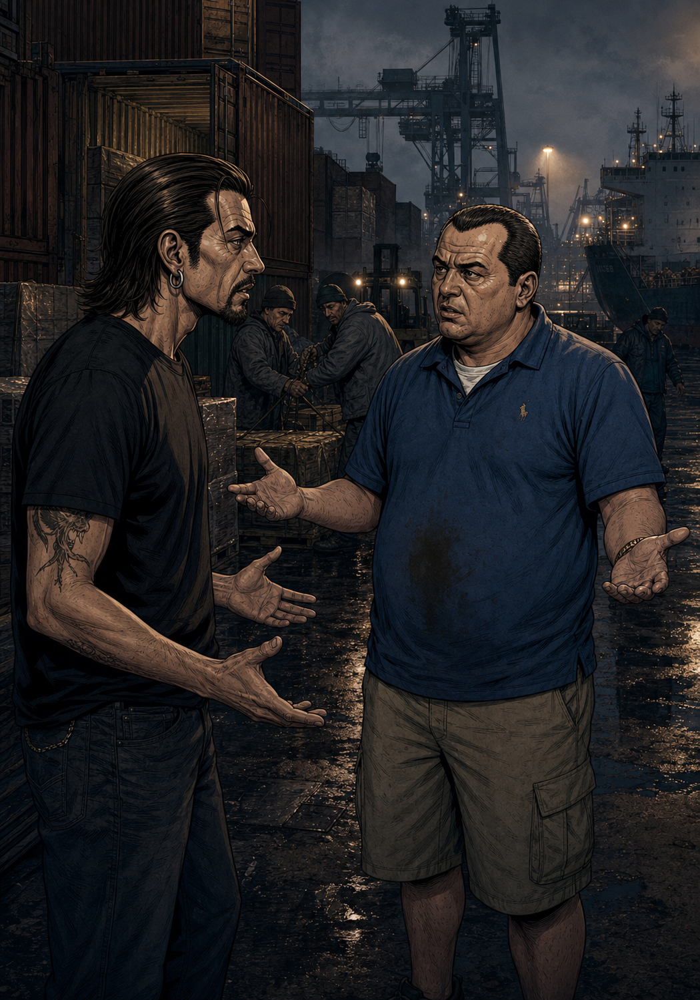
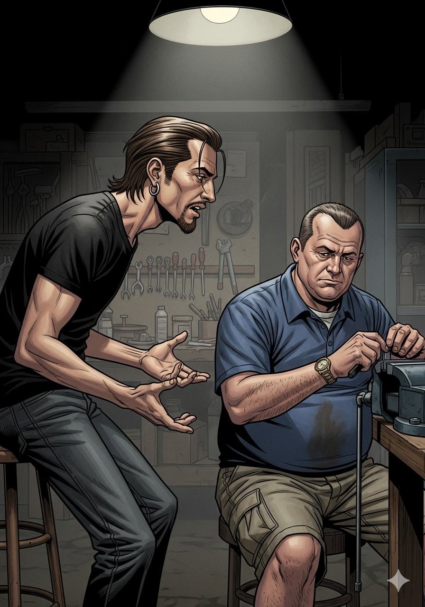
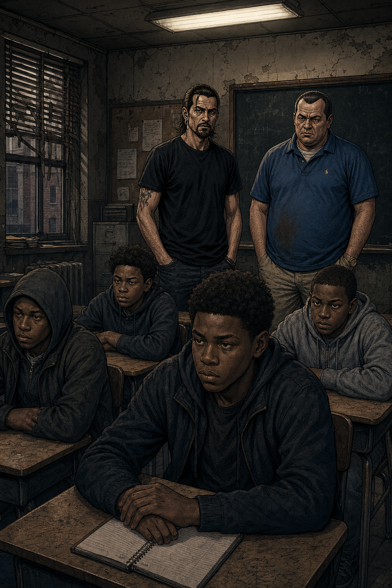
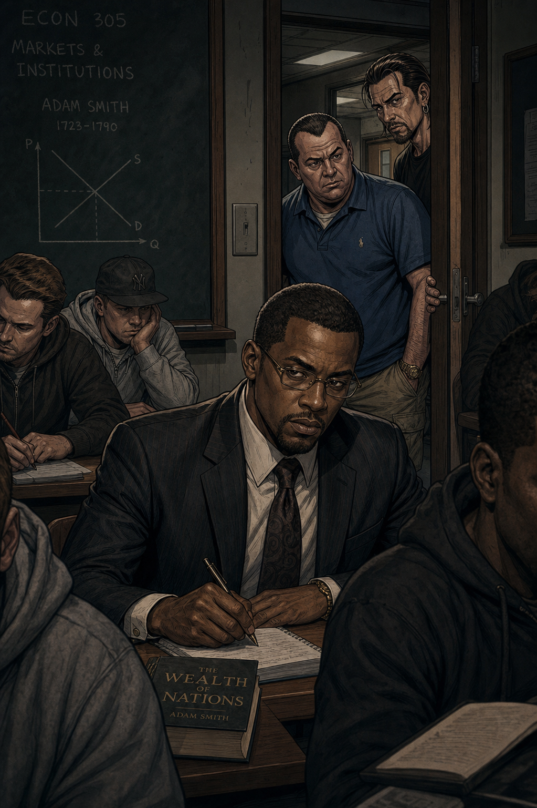

TONI
"¿Otra de tus inmersiones en la condición humana? Ponla, pero como sea un coñazo, limpias tú el arma un mes."
RULO
"Toni, me han hablado de una serie. Baltimore. Polis y camellos. Dicen que es la puta verdad, el evangelio."
Baltimore. Una tarde cualquiera. El sofá de siempre.

TONI
"¡Joder, esto es más lento que una misa de domingo! ¿Dónde están las persecuciones?"

RULO
"No estás mirando, tío. No va de eso. Va del juego. Del puto juego."
¡¡MÁS LENTO QUE UNA MISA!!

TONI
"Vale, vale... El tal Omar... silbando 'El granjero en el valle' antes de atracar un piso franco. Eso tiene estilo. El tío tiene un código."
Y entonces las calles de Baltimore empezaron a hacer su magia.
OMAR COMIN'... ☠

RULO
"Es una partida de ajedrez, Toni. Los peones, los reyes... Los polis están tan atrapados como los camellos."
Rulo sentía como si estuviera revelando un texto sagrado.

TONI
"¡Los muelles! ¿Ahora me meten polacos y griegos? ¡Necesito un puto organigrama!"
¡¡JODER CON LOS MUELLES!!
"El juego está amañado. Todo el sistema está roto."
— Rulo, Evangelio según Baltimore
RULO
"Todo está conectado, tío. La droga, los sindicatos, los políticos... es todo el puto sistema."
TONI
"¡Sistema mis cojones! ¡Es deprimente!"

Temporada 4. Los niños. Ya nada vuelve a ser lo mismo.

TONI
"Ves a esos críos... Dukie, Randy... y sabes que están jodidos desde el principio. ¿Qué sentido tiene mirar si no hay esperanza?"
Un pesado silencio cayó entre ellos.
Temporada 4. El golpe más duro.

TONI
"¿Ver qué? ¿Que todo es un montón de mierda? Eso ya lo pillo cada mañana cuando me miro al espejo."

RULO
"Quizá ese es el punto. Que el juego está amañado. No se supone que te haga sentir bien. Se supone que te haga ver."
RULO
"La serie no te da respuestas, solo te muestra las piezas. Lo que hagas con ellas... eso depende de ti."
TONI
"Tú y tu puta filosofía. Pero sigue siendo la mejor puta serie que he visto en mi vida."
Y Toni gruñó. Y asomó esa maldita sonrisa.
FIN.
Veredicto final · Zaska y Acción
LA MEJOR PUTA SERIE
QUE HAS VISTO EN TU VIDA.
The Wire · HBO · 2002—2008 · El juego está amañado